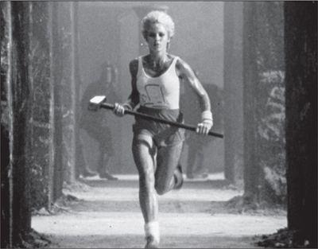

The "1984" ad
The high point of the October 1983 Apple sales conference in Hawaii was a skit based on a TV show called The Dating Game. Jobs played emcee, and his three contestants, whom he had convinced to fly to Hawaii, were Bill Gates and two other software executives, Mitch Kapor and Fred Gibbons. As the show’s jingly theme song played, the three took their stools. Gates, looking like a high school sophomore, got wild applause from the 750 Apple salesmen when he said, “During 1984, Microsoft expects to get half of its revenues from software for the Macintosh.” Jobs, clean-shaven and bouncy, gave a toothy smile and asked if he thought that the Macintosh’s new operating system would become one of the industry’s new standards. Gates answered, “To create a new standard takes not just making something that’s a little bit different, it takes something that’s really new and captures people’s imagination. And the Macintosh, of all the machines I’ve ever seen, is the only one that meets that standard.”
1983年10月，苹果公司在夏威夷举行销售会议，乔布斯上演了一出根据电视节目《约会游戏》改编的小品剧，掀起了会议的髙潮。乔布斯扮演主持人，三位“单身汉嘉宾”分别是比尔·盖茨和另外两位软件领域的高管——米切尔·卡普尔（MitchKapor）与弗雷德·吉本斯（FredGibbons）。开场音乐演奏完毕，三位嘉宾就座并进行自我介绍。盖茨看上去就像个髙二的学生，他说“微软期望1984年全年收入的一半都来自为麦金塔电脑研发的软件”。台下750名苹果销售人员对他的话报以热烈掌声。乔布斯胡子刮得很干净，精神饱满，他笑着问盖茨是否认为麦金塔电脑的新操作系统会成为行业的新标准之一。盖茨答道：“要创建新标准并非只做出一点不同的东西就够了，而是需要真正全新且能抓住人们想象力的东西。在我见过的所有机器中，只有麦金塔电脑符合这一标准。”
But even as Gates was speaking, Microsoft was edging away from being primarily a collaborator with Apple to being more of a competitor. It would continue to make application software, like Microsoft Word, for Apple, but a rapidly increasing share of its revenue would come from the operating system it had written for the IBM personal computer. The year before, 279,000 Apple IIs were sold, compared to 240,000 IBM PCs and its clones. But the figures for 1983 were coming in starkly different: 420,000 Apple IIs versus 1.3 million IBMs and its clones. And both the Apple III and the Lisa were dead in the water.
尽管盖茨当时如此表示，但是微软正逐渐褪去苹果主要合作者的身份，而更多地以竞争对手的姿态出现。微软仍将继续为苹果公司编写应用软件，如Word，但是其快速增长的那部分收入则来自为IBM个人电脑所编写的操作系统。1982年，苹果个人电脑AppleII的销量为27.9万台，IBM个人电脑及其同类产品共售出24万台。1983年的数据则呈现了大逆转：AppleII电脑销量42万台，IBM个人电脑及其同类产品销量130万台，而AppleIII电脑和丽萨电脑都彻底失败。
Just when the Apple sales force was arriving in Hawaii, this shift was hammered home on the cover of Business Week. Its headline: “Personal Computers: And the Winner Is . . . IBM.” The story inside detailed the rise of the IBM PC. “The battle for market supremacy is already over,” the magazine declared. “In a stunning blitz, IBM has taken more than 26% of the market in two years, and is expected to account for half the world market by 1985. An additional 25% of the market will be turning out IBM-compatible machines.”
就在苹果销售人员抵达夏威夷参加销售会议时，《商业周刊》（BusinessWeek）当期的封面报道凸显了这一形势转变，其标题为：“个人电脑：赢家是……IBM”。文章详细介绍了IBM个人电脑的崛起。“对市场主导杈的争夺已经结束，”《商业周刊》宣布，“通过惊人的闪电出击，用两年的时间获取了超过26%的个人电脑市场份额。同时预计到1985年，该公司将占领全球一半的市场。IBM兼容机则将占据25%的市场份额。”
That put all the more pressure on the Macintosh, due out in January 1984, three months away, to save the day against IBM. At the sales conference Jobs decided to play the showdown to the hilt. He took the stage and chronicled all the missteps made by IBM since 1958, and then in ominous tones described how it was now trying to take over the market for personal computers: “Will Big Blue dominate the entire computer industry? The entire information age? Was George Orwell right about 1984?” At that moment a screen came down from the ceiling and showed a preview of an upcoming sixty-second television ad for the Macintosh. In a few months it was destined to make advertising history, but in the meantime it served its purpose of rallying Apple’s demoralized sales force. Jobs had always been able to draw energy by imagining himself as a rebel pitted against the forces of darkness. Now he was able to energize his troops with the same vision.
这一切都令将于3个月后（即1984年1月）发布的麦金塔电脑压力更大，它将成为扭转败局的关键。在销售会议上，乔布斯决定全力以赴，一决髙下。他走上台，历数IBM自1958年以来的所有失误，然后他的声音里带着可怖的意味开始描述IBM正如何试图主宰整个个人电脑市场：“我们能让IBM主宰整个电脑产业吗？我们能让控制整个信息时代吗？乔治·奥威尔在《1984》中的描述会成真吗？”话音刚落，一块屏幕徐徐落下，播放了一段专为麦金塔电脑制作的广告片，这则即将推出的60秒广告有点儿科幻电影的意味。在数月之后，这则广告注定要名垂史册。但当时，它凝聚了苹果公司销售人员低落的士气。一直以来，乔布斯都将自己想象成一个抗击黑暗势力的反叛者，并从中获取能量。现在，他也这样激发自己的团队。
There was one more hurdle: Hertzfeld and the other wizards had to finish writing the code for the Macintosh. It was due to start shipping on Monday, January 16. One week before that, the engineers concluded they could not make that deadline.
不过当时还有一个障碍。赫茨菲尔德和其他工程师必须完成麦金塔电脑的编程工作，而程序已定于1月16日（周一）交付运行，距离交付日只剩一周的时候，工程师们认为他们无法按时完成工作。程序还存在一些毛病。
Jobs was at the Grand Hyatt in Manhattan, preparing for the press previews, so a Sunday morning conference call was scheduled. The software manager calmly explained the situation to Jobs, while Hertzfeld and the others huddled around the speakerphone holding their breath. All they needed was an extra two weeks. The initial shipments to the dealers could have a version of the software labeled “demo,” and these could be replaced as soon as the new code was finished at the end of the month. There was a pause. Jobs did not get angry; instead he spoke in cold, somber tones. He told them they were really great. So great, in fact, that he knew they could get this done. “There’s no way we’re slipping!” he declared. There was a collective gasp in the Bandley building work space. “You guys have been working on this stuff for months now, another couple weeks isn’t going to make that much of a difference. You may as well get it over with. I’m going to ship the code a week from Monday, with your names on it.”
当时，乔布斯正在曼哈顿的君悦酒店（GmndHyatt）为媒体沟通会作准备，因此，同工程师的电话会议就定在周日上午进行。软件经理镇定地向乔布斯说明了情况，赫茨菲尔德和其他人都围着电话，屏息凝神。他们只要求将期限延长两周，公司可以先给经销商一个“演示版”软件，只要新程序在这个月底完成，就能马上进行替换。片刻沉默之后，乔布斯并没有生气。相反，他用冷静低沉的语调告诉工程师们他们真的很棒。事实上，这些人的确非常棒，乔布斯相信他们能够搞定。“我们决不会推迟！”他郑重声明。电话另一头，班德利大楼工作间里的工程师们都倒吸了一口气。“这个东西你们已经做了好几个月了，再多两个星期也不会有很大差别。你们还是赶快把它做完。我会在一周后将你们的程序交付运行，上面会标有你们的名字。”
“Well, we’ve got to finish it,” Steve Capps said. And so they did. Once again, Jobs’s reality distortion field pushed them to do what they had thought impossible. On Friday Randy Wigginton brought in a huge bag of chocolate-covered espresso beans for the final three all-nighters. When Jobs arrived at work at 8:30 a.m. that Monday, he found Hertzfeld sprawled nearly comatose on the couch. They talked for a few minutes about a remaining tiny glitch, and Jobs decreed that it wasn’t a problem. Hertzfeld dragged himself to his blue Volkswagen Rabbit (license plate: MACWIZ) and drove home to bed. A short while later Apple’s Fremont factory began to roll out boxes emblazoned with the colorful line drawings of the Macintosh. Real artists ship, Jobs had declared, and now the Macintosh team had.
“好吧，我们得完成它。”史蒂夫·卡普斯说道。他们做到了。又一次，乔布斯用自己的现实扭曲力场让团队成员完成了自认为不可能完成的任务。周五，为熬过最后三个通宵，兰迪·威金顿带来了一大包浓缩咖啡巧克力豆。1月16日周一早晨8点半，乔布斯来到公司，发现赫茨菲尔德趴在沙发上，几近昏睡。他们聊了萌剩下的一些细微毛病，乔布斯认为这不成问题。赫茨菲尔德拖着疲惫的身子钻进自己的蓝色大众髙尔夫（车牌MACWIZ），开车回家睡觉。过了一会儿，苹果公司位于弗雷蒙的工厂开始生产印有彩色条纹苹果标志的盒子。乔布斯曾称，真正的艺术家总能完成作品，现在他们名副其实。
In the spring of 1983, when Jobs had begun to plan for the Macintosh launch, he asked for a commercial that was as revolutionary and astonishing as the product they had created. “I want something that will stop people in their tracks,” he said. “I want a thunderclap.” The task fell to the Chiat/Day advertising agency, which had acquired the Apple account when it bought the advertising side of Regis McKenna’s business. The person put in charge was a lanky beach bum with a bushy beard, wild hair, goofy grin, and twinkling eyes named Lee Clow, who was the creative director of the agency’s office in the Venice Beach section of Los Angeles. Clow was savvy and fun, in a laid-back yet focused way, and he forged a bond with Jobs that would last three decades.
1983年春，乔布斯开始计划麦金塔电脑的发布，他希望那部广告片能和自己所创造的产品一样富有革命性，令人惊奇。“我想要一种能让人们当场停下来观看的东西他说道，“我想要的是一声惊雷。”这个任务落在了Chiat/Day广告公司的肩上，该公司在收购了里吉斯·麦肯纳的广告业务后，拿下了苹果公司的合同。负责这项工作的是李·克劳（LeeClow），他身材瘦髙，皮肤晒成了棕色，胡须浓密，头发蓬乱，喜欢憨笑，双眼熠熠放光，他是Chiat/Day广告公司的创意总监，办公室就在洛杉矶威尼斯海滩。克劳经验丰富，为人风趣，看散漫却很专心；至今，他与乔布斯之间的合作已走过了30年。
Clow and two of his team, the copywriter Steve Hayden and the art director Brent Thomas, had been toying with a tagline that played off the George Orwell novel: “Why 1984 won’t be like 1984.” Jobs loved it, and asked them to develop it for the Macintosh launch. So they put together a storyboard for a sixty-second ad that would look like a scene from a sci-fi movie. It featured a rebellious young woman outrunning the Orwellian thought police and throwing a sledgehammer into a screen showing a mind-controlling speech by Big Brother.
当时，克劳同其两位团队成员——文案史蒂夫·海登（SteveHayden）和艺术总监布伦特·托马斯（BrentThomas），一直在玩味着一句反驳乔治·奥威尔小说的话：“这就是为什么1984不会变成《1984》。”乔布斯很喜欢这句话，并让他们加以演绎，用于麦金塔电脑的发布当中。于是，他们编写了一个60秒广告的故事脚本，看上去有点儿像科幻电影中的场景。广告讲述了一个反叛的年轻女子，从奥威尔式思想警察的追捕中逃脱，当老大哥正在大屏幕上进行控制人心的讲话时，她将大锤砸向屏幕。
The concept captured the zeitgeist of the personal computer revolution. Many young people, especially those in the counterculture, had viewed computers as instruments that could be used by Orwellian governments and giant corporations to sap individuality. But by the end of the 1970s, they were also being seen as potential tools for personal empowerment. The ad cast Macintosh as a warrior for the latter cause—a cool, rebellious, and heroic company that was the only thing standing in the way of the big evil corporation’s plan for world domination and total mind control.
这个广告抓住了个人电脑革命的时代精神。许多年轻人，尤其是反主流文化人士，认为计算机是奥威尔式政府和大企业用以消除人们个性的工具。但在20世纪70年代末，电脑也被视做能够释放个人能量的工具。这则广告恰恰抓住了后一种心态，将麦金塔电脑塑造成为个人自由而战的斗士——面对邪恶的大企业意欲统治世界并实行完全的精神控制，唯有苹果这家冷静、反叛、英勇的公司能够阻止它。
Jobs liked that. Indeed the concept for the ad had a special resonance for him. He fancied himself a rebel, and he liked to associate himself with the values of the ragtag band of hackers and pirates he recruited to the Macintosh group. Even though he had left the apple commune in Oregon to start the Apple corporation, he still wanted to be viewed as a denizen of the counterculture rather than the corporate culture.
乔布斯喜欢这个创意。事实上，这则广告的观念与他有着特殊的共鸣。乔布斯幻想自己是一个反叛者，他招入麦金塔团队的人都充满了黑客气质和海盗精神，他喜欢将自己与这种价值观联系起来。在打造麦金塔电脑的时候，他们还在办公楼挂起了海盗旗。尽管乔布斯离开位于俄勒冈州的“苹果社区”创办了苹果公司，但他仍然希望别人将自己看做是一个反主流文化的人，而非大企业文化的代言人。
But he also realized, deep inside, that he had increasingly abandoned the hacker spirit. Some might even accuse him of selling out. When Wozniak held true to the Homebrew ethic by sharing his design for the Apple I for free, it was Jobs who insisted that they sell the boards instead. He was also the one who, despite Wozniak’s reluctance, wanted to turn Apple into a corporation and not freely distribute stock options to the friends who had been in the garage with them. Now he was about to launch the Macintosh, a machine that violated many of the principles of the hacker’s code: It was overpriced; it would have no slots, which meant that hobbyists could not plug in their own expansion cards or jack into the motherboard to add their own new functions; and it took special tools just to open the plastic case. It was a closed and controlled system, like something designed by Big Brother rather than by a hacker.
但他内心深处意识到，自己正日益摒弃黑客精神。有些人甚至指责乔布斯出卖了黑客精神。当沃兹尼亚克秉承家酿计算机俱乐部的准则，免费分享自己对AppleI电脑的设计时，乔布斯坚持将产品（主板）卖给俱乐部的成员。尽管沃兹尼亚克不愿意，但乔布斯想让苹果成为一家商业公司，让它上市，而不是无偿地向曾在车库里一起奋战的朋友分发股票期权。现在，乔布斯要推出麦金塔电脑，他很清楚这一产品违背了黑客信条的许多原则。麦金塔电脑的价格过高，不设插槽，这样电脑爱好者就无法插入自己的扩展卡或在主板上添加自己期望的新功能。他甚至将麦金塔电脑设计成一个无法从外部进入的电脑，光是打开塑料外壳就需要用到特殊工具。麦金塔电脑是一个封闭和受控的系统，它更像是“老大哥”设计的东西，而非出自黑客之手。
So the “1984” ad was a way of reaffirming, to himself and to the world, his desired self-image. The heroine, with a drawing of a Macintosh emblazoned on her pure white tank top, was a renegade out to foil the establishment. By hiring Ridley Scott, fresh off the success of Blade Runner, as the director, Jobs could attach himself and Apple to the cyberpunk ethos of the time. With the ad, Apple could identify itself with the rebels and hackers who thought differently, and Jobs could reclaim his right to identify with them as well.
因此，乔布斯希望通过“1984”广告片向自己和世界重新确立他所希冀的自我形象。广告中的女主角是意图挫败老大哥世界的反叛者，她穿着纯白色背心，上面印有一台麦金塔电脑。刚刚凭借《银翼杀手》（BladeRunner）一片大获成功的雷德利·斯科特（RidleyScott）被乔布斯起用，作为广告片的导演。乔布斯借此可以将自己和苹果公司与那个时代的赛博朋克精神联系起来。通过这则广告，苹果公司能够在那帮想法与众不同的叛道者和黑客之中获得认同，而乔布斯也能重塑自己的形象。
Sculley was initially skeptical when he saw the storyboards, but Jobs insisted that they needed something revolutionary. He was able to get an unprecedented budget of $750,000 just to film the ad, which they planned to premiere during the Super Bowl. Ridley Scott made it in London using dozens of real skinheads among the enthralled masses listening to Big Brother on the screen. A female discus thrower was chosen to play the heroine. Using a cold industrial setting dominated by metallic gray hues, Scott evoked the dystopian aura of Blade Runner. Just at the moment when Big Brother announces “We shall prevail!” the heroine’s hammer smashes the screen and it vaporizes in a flash of light and smoke.
斯卡利最初看到故事脚本时持怀疑态度，但乔布斯坚持认为，他们需要具有革命性的东西。他得以拿到一笔空前的预算——75万美元来拍摄广告。雷德利·斯科特在伦敦完成了广告片的拍摄，为了表现群众如痴如醉聆听老大哥在屏幕上讲话的场面，他找来了数十个真正的光头来拍摄这一幕。女主角的扮演者是一位女子铁饼运动员。广告片以金属灰色调为主，渲染了一种冷漠的工业环境背景，斯科特以此诱发人们联想到《银翼杀手》的反乌托邦氛围。当老大哥在屏幕上宣布“我们必胜！”之时，女主角的锤子击碎了屏幕，一切在一阵光和烟雾中消失。
When Jobs previewed the ad for the Apple sales force at the meeting in Hawaii, they were thrilled. So he screened it for the board at its December 1983 meeting. When the lights came back on in the boardroom, everyone was mute. Philip Schlein, the CEO of Macy’s California, had his head on the table. Mike Markkula stared silently; at first it seemed he was overwhelmed by the power of the ad. Then he spoke: “Who wants to move to find a new agency?” Sculley recalled, “Most of them thought it was the worst commercial they had ever seen.” Sculley himself got cold feet. He asked Chiat/Day to sell off the two commercial spots—one sixty seconds, the other thirty—that they had purchased.
当乔布斯在夏威夷销售会议上展示这段广告时，人们激动不已。于是，他决定在1983年12月的董事会会议上播放这则广告。广告播放完毕，会议室的灯重新亮起来后，所有人都沉默了。梅西百货公司加利福尼亚分公司的CEO菲利普·施莱因（PhilipSchlein）趴在桌子上。马库拉静静地凝视前方，一开始别人还以为他是为这则广告的力量所折服。但接着，他问道：“有谁想另找一家广告公司？”斯卡利回忆说：“大多数人都认为这是自己看过的最差的广告片。”斯卡利此时信心全无，他让Chiat/Day公司廉价卖掉已经买下的两个广告时段，一个60秒，另一个30秒。
Jobs was beside himself. One evening Wozniak, who had been floating into and out of Apple for the previous two years, wandered into the Macintosh building. Jobs grabbed him and said, “Come over here and look at this.” He pulled out a VCR and played the ad. “I was astounded,” Woz recalled. “I thought it was the most incredible thing.” When Jobs said the board had decided not to run it during the Super Bowl, Wozniak asked what the cost of the time slot was. Jobs told him $800,000. With his usual impulsive goodness, Wozniak immediately offered, “Well, I’ll pay half if you will.”
乔布斯为此愤怒不已。一天晚上，沃兹尼亚克溜达到麦金塔办公楼——此前的两年时间里他一度淡出苹果公司，在苹果的工作并不固定。乔布斯逮住他说：“过来看看这个东西！”他找来一台录像机，开始播放“1984”广告片。“我一下子被震住了，”沃兹回忆说，“我认为它是最了不起的东西。”乔布斯告诉他，董事会决定不在“超级碗”大赛中播放这则广告，沃兹尼亚克就开始询问广告时段的价钱。乔布斯说要80万美元。在一贯的善意冲动下，沃兹尼亚克立即提出：“好吧，如果你愿意出一半钱，我就付另一半。”
He ended up not needing to. The agency was able to sell off the thirty-second time slot, but in an act of passive defiance it didn’t sell the longer one. “We told them that we couldn’t sell the sixty-second slot, though in truth we didn’t try,” recalled Lee Clow. Sculley, perhaps to avoid a showdown with either the board or Jobs, decided to let Bill Campbell, the head of marketing, figure out what to do. Campbell, a former football coach, decided to throw the long bomb. “I think we ought to go for it,” he told his team.
不过，他最终根本无须出这一半的钱。广告公司把30秒的广告时段卖掉了，但是出于消极反抗的心理，他们没有出售那个时长60秒的广告时段。“我们告诉苹果公司，60秒的卖不掉，而事实上我们根本试都没试。”李·克劳说道。斯卡利也许是为了避免同董事会和乔布斯摊牌，于是决定由负责营销的比尔·坎贝尔（BillCampbell）来考虑怎么做。坎贝尔曾担任过橄榄球教练，他决定用这60秒的广告间放手一搏。“我认为我们应该努力争取一下。”他告诉自己的团队。
Early in the third quarter of Super Bowl XVIII, the dominant Raiders scored a touchdown against the Redskins and, instead of an instant replay, television screens across the nation went black for an ominous two full seconds. Then an eerie black-and-white image of drones marching to spooky music began to fill the screen. More than ninety-six million people watched an ad that was unlike any they’d seen before. At its end, as the drones watched in horror the vaporizing of Big Brother, an announcer calmly intoned, “On January 24th, Apple Computer will introduce Macintosh. And you’ll see why 1984 won’t be like ‘1984.’”
第十八届“超级碗”大赛中，突击者队和红人队比赛的第三节刚开始，占优势的突击者队就触底得分。但是，电视没有即时重播这一得分画面，相反，全美的电视屏幕突然诡异地黑屏了两秒钟。接着，屏幕上开始出现一幕可怕的黑白画面——一支队伍踩着令人毛骨悚然的音乐前进。超过9600万人观看了这则和以往任何广告都不一样的片子。广告的结尾处，人群惊恐地看着“老大哥”的消矢，此时，旁白平静地念道：“1月24日，苹果电脑公司将推出麦金塔电脑。你将明白为什么1984不会变成《1984》。”
It was a sensation. That evening all three networks and fifty local stations aired news stories about the ad, giving it a viral life unprecedented in the pre–YouTube era. It would eventually be selected by both TV Guide and Advertising Age as the greatest commercial of all time.
这则广告红极一时。当天晚上，美国三大电视网和50个地方电视台都播放了关于该广告的新闻，让它在前YouTube时代获得了前所未有的病毒式的生命力。这则广告最终被《电视指南》（TVGuide）和《广告时代》（AdvertisingAge）评为有史以来最伟大的商业广告。
Over the years Steve Jobs would become the grand master of product launches. In the case of the Macintosh, the astonishing Ridley Scott ad was just one of the ingredients. Another part of the recipe was media coverage. Jobs found ways to ignite blasts of publicity that were so powerful the frenzy would feed on itself, like a chain reaction. It was a phenomenon that he would be able to replicate whenever there was a big product launch, from the Macintosh in 1984 to the iPad in 2010. Like a conjurer, he could pull the trick off over and over again, even after journalists had seen it happen a dozen times and knew how it was done. Some of the moves he had learned from Regis McKenna, who was a pro at cultivating and stroking prideful reporters. But Jobs had his own intuitive sense of how to stoke the excitement, manipulate the competitive instincts of journalists, and trade exclusive access for lavish treatment.
多年来，史蒂夫·乔布斯已成为产品发布大师。以麦金塔电脑的发布为例，雷德利·斯科特的惊人广告仅仅是产品发布的一部分，还有一部分是媒体报道。乔布斯知道如何激发媒体进行爆炸式宣传，这种宣传方式威力强大，会像连锁反应一样越来越疯狂。只要有重要的产品发布，乔布斯就会经常重复使用这一方法，从1984年的麦金塔电脑到2010年的iPad发布都是如此，这已经成为一种现象。他就像一个魔术师，能够一遍又一遍地施用相同的伎俩，即便记者们已经目睹多次，也知道事情会如何发展。有一些窍门是他从里吉斯·麦肯纳那里学来的，麦肯纳擅长引导和激发自负的记者。但是，在如何挑起记者的兴奋之情、操纵新闻工作者的竞争本能和通过透露独家新闻获得丰厚回报方面，乔布斯也有着自己的直觉。
In December 1983 he took his elfin engineering wizards, Andy Hertzfeld and Burrell Smith, to New York to visit Newsweek to pitch a story on “the kids who created the Mac.” After giving a demo of the Macintosh, they were taken upstairs to meet Katharine Graham, the legendary proprietor, who had an insatiable interest in whatever was new. Afterward the magazine sent its technology columnist and a photographer to spend time in Palo Alto with Hertzfeld and Smith. The result was a flattering and smart four-page profile of the two of them, with pictures that made them look like cherubim of a new age. The article quoted Smith saying what he wanted to do next: “I want to build the computer of the 90’s. Only I want to do it tomorrow.” The article also described the mix of volatility and charisma displayed by his boss: “Jobs sometimes defends his ideas with highly vocal displays of temper that aren’t always bluster; rumor has it that he has threatened to fire employees for insisting that his computers should have cursor keys, a feature that Jobs considers obsolete. But when he is on his best behavior, Jobs is a curious blend of charm and impatience, oscillating between shrewd reserve and his favorite expression of enthusiasm: ‘Insanely great.’”
1983年12月，他带着自己的天才工程师安迪·赫茨菲尔德和伯勒尔·史密斯，前往纽约走访《新闻周刊》，想让对方写一篇关于“创造麦金塔电脑的小伙子们”的报道。在进行了麦金塔电脑的演示之后，他们被带上楼同凯瑟琳·格雷厄姆（KatherineGraham）见面。格雷厄姆是媒体界的一位传奇人物，她对所有新生事物都充满莫大的兴趣。之后，《新闻周刊》杂志派遣自己的科技专栏作家和一位摄影师前往帕洛奥图，与赫茨菲尔德和史密斯共度一段时光。最后发表的报道共4页，介绍了这两位工程师，溢美之情尽显，此外还配上两人在家中的图片，令他们看上去就像是新时代的天使。文章援引史密斯的话来表述他接下来要做的事：“我想要打造90年代的计算机，明天就开始。”文章还描写了两人的那位老板的反复无常和领袖魅力。“乔布斯有时会发怒，髙声为自己的想法辩护，但并不会动不动就咆哮；乔布斯认为光标键已经过时，有传言称，他曾因员工坚持表示苹果电脑应该有光标键而威胁要开除对方。但是，当乔布斯处于最佳状态时，他是魅力和急躁的奇特融合体，时而含蓄，时而酷毙了。而‘酷毙了’（InsanelyGreat）正是他最喜欢用来表达自己激情的短语。”
The technology writer Steven Levy, who was then working for Rolling Stone, came to interview Jobs, who urged him to convince the magazine’s publisher to put the Macintosh team on the cover of the magazine. “The chances of Jann Wenner agreeing to displace Sting in favor of a bunch of computer nerds were approximately one in a googolplex,” Levy thought, correctly. Jobs took Levy to a pizza joint and pressed the case: Rolling Stone was “on the ropes, running crummy articles, looking desperately for new topics and new audiences. The Mac could be its salvation!” Levy pushed back. Rolling Stone was actually good, he said, and he asked Jobs if he had read it recently. Jobs said that he had, an article about MTV that was “a piece of shit.” Levy replied that he had written that article. Jobs, to his credit, didn’t back away from the assessment. Instead he turned philosophical as he talked about the Macintosh. We are constantly benefiting from advances that went before us and taking things that people before us developed, he said. “It’s a wonderful, ecstatic feeling to create something that puts it back in the pool of human experience and knowledge.”
当时还在《滚石》杂志工作的科技作家斯蒂芬·列维（StevenLevy）来采访乔布斯，乔布斯立即要求该杂志将麦金塔团队登在封面上。“简·温纳（JajinWerner）同意换下斯汀（Police乐队主唱）而让一群电脑狂人登上封面的可能性几乎为零。”列维如此认为。他是对的。乔布斯带列维去吃比萨，谈论对麦金塔电脑团队的报道：“《滚石》杂志的处境岌岌可危，净登些烂文章，它正在拼命发掘新的话题和受众。麦金塔电脑就是《滚石》的救命稻草！”列维反驳说，《滚石》杂志事实上很好，并问乔布斯最近真的读过《滚石》吗？乔布斯说自己在飞机上读了上面一篇关于MTV的文章，他认为这篇文章就是“一坨狗屎”。列维回答说，那正是自己写的文章。值得赞扬的是，乔布斯并没有转换话题停止评论，尽管他确实换了个目标，开始抨击《时代》杂志一年前对他的“肆意捏造”。接着，在谈论麦金塔电脑的时候，他又变得豁达了。他表示，人类一直都在从超前的知识进步中获益，并且在使用超前者所研发出来的东西。“能够创造出在人类经验和知识史上占有一席之地的东西，是一种美妙和令人欣喜若狂的感觉。”
Levy’s story didn’t make it to the cover. But in the future, every major product launch that Jobs was involved in—at NeXT, at Pixar, and years later when he returned to Apple—would end up on the cover of either Time, Newsweek, or Business Week.
列维的报道并没有登上《滚石》的封面。但是后来，乔布斯参与的所有主要产品的发布——无论是在NeXT、皮克斯，还是多年后重回苹果公司——都登上了《时代》杂志、《新闻周刊》或《商业周刊》的封面。
On the morning that he and his teammates completed the software for the Macintosh, Andy Hertzfeld had gone home exhausted and expected to stay in bed for at least a day. But that afternoon, after only six hours of sleep, he drove back to the office. He wanted to check in to see if there had been any problems, and most of his colleagues had done the same. They were lounging around, dazed but excited, when Jobs walked in. “Hey, pick yourselves up off the floor, you’re not done yet!” he announced. “We need a demo for the intro!” His plan was to dramatically unveil the Macintosh in front of a large audience and have it show off some of its features to the inspirational theme from Chariots of Fire. “It needs to be done by the weekend, to be ready for the rehearsals,” he added. They all groaned, Hertzfeld recalled, “but as we talked we realized that it would be fun to cook up something impressive.”
和同事完成麦金塔软件的那个早晨，安迪·赫茨菲尔德到家时已筋疲力尽，他想，自己或许会在床上至少躺上一天。但是当天下午，仅仅睡了6个小时后，他就开车回到了办公室。他想要确认软件是否存在任何问题，而大多数同事也和他一样。乔布斯走进来时，他们正躺在地板上，昏昏沉沉但又兴奋不已。“嘿，赶紧起来，还没完呢！”他说道，“我们需要为麦金塔电脑做一个演示！”乔布斯计划在一大群观众面前戏剧性地掲开麦金的面纱，并且想在电影《烈火战车》（ChariotsofFire）鼓舞人心的主题曲中，向人们展示机器的特性。“这周末就要完成，为预演作好准备。”他补充道。赫茨菲尔德回忆说，办公室里的人听了他的话都呻吟起来，“但是我们讨论了一阵子就意识到，如果能做出令人印象深刻的东西，肯定很有意思。”
The launch event was scheduled for the Apple annual stockholders’ meeting on January 24—eight days away—at the Flint Auditorium of De Anza Community College. The television ad and the frenzy of press preview stories were the first two components in what would become the Steve Jobs playbook for making the introduction of a new product seem like an epochal moment in world history. The third component was the public unveiling of the product itself, amid fanfare and flourishes, in front of an audience of adoring faithful mixed with journalists who were primed to be swept up in the excitement.
麦金塔的发布仪式定在8天之后的1月24日，与苹果年度股东大会同期举行，地点在迪安扎社区学院的弗林特礼堂。除了电视广告和疯狂的媒体预热，发布仪式也是其新产品发布的一个组成部分——乔布斯能将新消费产品的发布变成具有划时代意义的时刻，产品在一片热闹与喧嚣中正式掲晓，观众推崇备至，记者也被兴奋席卷。
Hertzfeld pulled off the remarkable feat of writing a music player in two days so that the computer could play the Chariots of Fire theme. But when Jobs heard it, he judged it lousy, so they decided to use a recording instead. At the same time, Jobs was thrilled with a speech generator that turned text into spoken words with a charming electronic accent, and he decided to make it part of the demo. “I want the Macintosh to be the first computer to introduce itself!” he insisted.
赫茨菲尔德完成了一个了不起的壮举——在两天时间内编了一个音乐播放器程序，让电脑能够播放《烈火战车》的主题曲。但乔布斯听过后觉得很糟糕，于是他们决定用录音代替。另一方面，乔布斯完全被语音发生器所折服，这个程序能够将文本转变为迷人的电子语音。他决定以此作为演示的一部分：“我要麦金塔成为第一台可以自我介绍的电脑！”乔布斯邀请“1984”广告的文案史蒂夫·海登来撰写脚本。史蒂夫·卡普斯设法让“麦金塔”这个词在屏幕上以大字体滚动展示，苏珊·卡雷（SusanKare）则设计出了开场画面。
At the rehearsal the night before the launch, nothing was working well. Jobs hated the way the animation scrolled across the Macintosh screen, and he kept ordering tweaks. He also was dissatisfied with the stage lighting, and he directed Sculley to move from seat to seat to give his opinion as various adjustments were made. Sculley had never thought much about variations of stage lighting and gave the type of tentative answers a patient might give an eye doctor when asked which lens made the letters clearer. The rehearsals and changes went on for five hours, well into the night. “He was driving people insane, getting mad at the stagehands for every glitch in the presentation,” Sculley recalled. “I thought there was no way we were going to get it done for the show the next morning.”
在发布仪式前夜的预演中，这一切都没能顺利进行。乔布斯讨厌动画在屏幕上滚动的方式，不断要求做出调整。此外他对舞台灯光也不满意，他让斯卡利在礼堂的不同座位上感受各种调整带来的效果并给出意见。斯卡利从来没有对舞台灯光的变化考虑过多，也没想过自己要不断给出调试意见，就像病人要告诉眼科医生哪个镜片能更清晰地看到视力表。预演和调试持续了5个小时，直到深夜。斯卡利回忆，“他把人都逼疯了，发言展示中有一点儿问题他都要对舞台工作人员发火。”“我当时都以为我们没法为第二天上午的展示作好准备。”斯卡利说道。
Most of all, Jobs fretted about his presentation. Sculley fancied himself a good writer, so he suggested changes in Jobs’s script. Jobs recalled being slightly annoyed, but their relationship was still in the phase when he was lathering on flattery and stroking Sculley’s ego. “I think of you just like Woz and Markkula,” he told Sculley. “You’re like one of the founders of the company. They founded the company, but you and I are founding the future.” Sculley lapped it up.
最主要的是，乔布斯为自己的演示很是焦躁。“他扔掉了幻灯片，”斯卡利自认为是个优秀的作家，于是他建议乔布斯对讲稿作一些改动。据回忆，乔布斯对此有些烦躁，但是两人的关系当时仍然很好，乔布斯不断赞扬和激励斯卡利。“我觉得你就像沃兹和马库拉一样，”他告诉斯卡利，“你就像苹果公司的又一个创始人。他们创立了苹果，但是我和你在创造未来。”斯卡利欣然接受了乔布斯的鼓舞，多年后，他仍然能复述乔布斯的这些话。
The next morning the 2,600-seat auditorium was mobbed. Jobs arrived in a double-breasted blue blazer, a starched white shirt, and a pale green bow tie. “This is the most important moment in my entire life,” he told Sculley as they waited backstage for the program to begin. “I’m really nervous. You’re probably the only person who knows how I feel about this.” Sculley grasped his hand, held it for a moment, and whispered “Good luck.”
次日上午，可容纳2600人的弗林特礼堂被挤得水泄不通。乔布斯穿着一件蓝色双排扣西装外套，里面是一件笔挺的白衬衫，打着浅绿色领结。“这是我人生中最重要的时刻，”在后台等待活动开始时，乔布斯对斯卡利说，“我真的很紧张。你可能是唯一知道我对这次发布会感受的人。”斯卡利抓住他的手，握了片刻，低声说了句好运。
As chairman of the company, Jobs went onstage first to start the shareholders’ meeting. He did so with his own form of an invocation. “I’d like to open the meeting,” he said, “with a twenty-year-old poem by Dylan—that’s Bob Dylan.” He broke into a little smile, then looked down to read from the second verse of “The Times They Are a-Changin’.” His voice was high-pitched as he raced through the ten lines, ending with “For the loser now / Will be later to win / For the times they are a-changin’.” That song was the anthem that kept the multimillionaire board chairman in touch with his counterculture self-image. He had a bootleg copy of his favorite version, which was from the live concert Dylan performed, with Joan Baez, on Halloween 1964 at Lincoln Center’s Philharmonic Hall.
作为苹果公司的董事长，乔布斯首先登台，宣布股东大会正式开始。他用自己的方式开场：“我想用迪伦——鲍勃·迪伦20年前的一首歌来开场。”他笑了笑，然后低下头开始诵读《时代在变》（TheTimesTheyAreA-Changin-）的第二段。在诵读这十行歌词时，他的声音髙尤，语速很快，直至结尾：“……现在的失败者/会成为以后的赢家/因为时代在变。”这首歌让乔布斯这位千万富豪董事长保持住了自己反主流文化的自我形象。他最喜欢的版本来自迪伦与琼·贝兹的一场现场演唱会——1964年万圣节在林肯中心交晌音乐厅举行，他还有这场演唱会的盗版录音带。
Sculley came onstage to report on the company’s earnings, and the audience started to become restless as he droned on. Finally, he ended with a personal note. “The most important thing that has happened to me in the last nine months at Apple has been a chance to develop a friendship with Steve Jobs,” he said. “For me, the rapport we have developed means an awful lot.”
接着，斯卡利上台汇报苹果公司的营收状况。随着他枯燥无味的讲话，观众们开始变得焦躁不安。终于，他以一段富有个人感情的话收尾。“在苹果公司过去9个月的时间里，对我来说最重要的事情就是有机会同史蒂夫·乔布斯发展一段友谊，”他说道，“我们之间所建立的默契，对我来说意义非常重大。”
The lights dimmed as Jobs reappeared onstage and launched into a dramatic version of the battle cry he had delivered at the Hawaii sales conference. “It is 1958,” he began. “IBM passes up a chance to buy a young fledgling company that has invented a new technology called xerography. Two years later, Xerox was born, and IBM has been kicking themselves ever since.” The crowd laughed. Hertzfeld had heard versions of the speech both in Hawaii and elsewhere, but he was struck by how this time it was pulsing with more passion. After recounting other IBM missteps, Jobs picked up the pace and the emotion as he built toward the present:
乔布斯再次上台，灯光暗了下来，他用一种戏剧性的方式，喊出了在夏威夷销售会议上的战斗口号。“1958年，IBM错过了收购一家羽翼未丰的公司的机会。这家小公司发明了一种称为静电复印的新技术。两年后，施乐公司诞生了，IBM从此追悔莫及。”观众都笑了起来。这段话赫茨菲尔德在夏威夷和其他地方都听过，但是此刻再度聆听觉得更富激情，备感震撼。在历数了：IBM的其他失误后，乔布斯语锋一转，加快了节奏，谈到了当前的状况：
It is now 1984. It appears that IBM wants it all. Apple is perceived to be the only hope to offer IBM a run for its money. Dealers, after initially welcoming IBM with open arms, now fear an IBM-dominated and-controlled future and are turning back to Apple as the only force who can ensure their future freedom. IBM wants it all, and is aiming its guns at its last obstacle to industry control, Apple. Will Big Blue dominate the entire computer industry? The entire information age? Was George Orwell right?
As he built to the climax, the audience went from murmuring to applauding to a frenzy of cheering and chanting. But before they could answer the Orwell question, the auditorium went black and the “1984” commercial appeared on the screen. When it was over, the entire audience was on its feet cheering.
如今到了1984年。IBM想占有一切。苹果被视做唯一能够与之抗衡的希望。经销商最初张开双臂欢迎IBM，现在他们害怕IBM主宰和控制未来，他们回到了苹果的怀抱，认为苹果能够保障自己在未来的自由。IBM想占有一切，苹果是它控制整个产业的最后一道障碍，它正把枪口指向苹果。我们能让IBM主宰整个电脑产北吗？我们能让IBM控制整个信息时代吗？乔治·奥威尔的描述会成真吗？
随着他的发言将现场气氛推向高xdx潮，观众们从喃喃低语转为热烈鼓掌，最后开始疯狂地欢呼和高喊着回应。但他们还没来得及回答关于奥威尔的问题，整个礼堂就陷入了黑暗，随即，“1984”电视广告出现在屏幕上。广告播映结束后，全场起立，欢声雷动。
With a flair for the dramatic, Jobs walked across the dark stage to a small table with a cloth bag on it. “Now I’d like to show you Macintosh in person,” he said. He took out the computer, keyboard, and mouse, hooked them together deftly, then pulled one of the new 3?-inch floppies from his shirt pocket. The theme from Chariots of Fire began to play. Jobs held his breath for a moment, because the demo had not worked well the night before. But this time it ran flawlessly. The word “MACINTOSH” scrolled horizontally onscreen, then underneath it the words “Insanely great” appeared in script, as if being slowly written by hand. Not used to such beautiful graphic displays, the audience quieted for a moment. A few gasps could be heard. And then, in rapid succession, came a series of screen shots: Bill Atkinson’s QuickDraw graphics package followed by displays of different fonts, documents, charts, drawings, a chess game, a spreadsheet, and a rendering of Steve Jobs with a thought bubble containing a Macintosh.
天生就知道如何激荡人心的乔布斯穿过黑暗的舞台，走向一张小桌子，桌上摆着一个布包。“现在，我要亲自向各位展示麦金塔电脑，”他说道，“接下来你们在大屏幕上所看到的画面，都是这个包里的东西实现的。”他拿出电脑、键盘和鼠标，熟练地组合起来，在观众的又一阵掌声中，他从衬衣口袋里拿出了一张新的3.5英寸软盘。《烈火战车》的主题曲开始响起，麦金塔屏幕上的图像被投影到大屏幕上。有那么一瞬，乔布斯屏住了呼吸，因为昨晚的演示从未成功。但是现在，一切运行得完美无缺。“麦金塔”在屏幕上横向滚动，接着下方出现了“酷毙了”的字样，就像用手慢慢写上去一样，观众安静了片刻。在寂静中，可以听到有人在喘息。然后，一系列屏幕截图开始接连快速出现：比尔·阿特金森（BillAtkinson）的QuickDraw图形程序包之后，屏幕上紧接着就展现了不同字体、文件、图表、图画、象棋比赛、电子表格，以及一张乔布斯的渲染图——图中他的脑海里浮现出一台麦金塔电脑。
When it was over, Jobs smiled and offered a treat. “We’ve done a lot of talking about Macintosh recently,” he said. “But today, for the first time ever, I’d like to let Macintosh speak for itself.” With that, he strolled back over to the computer, pressed the button on the mouse, and in a vibrato but endearing electronic deep voice, Macintosh became the first computer to introduce itself. “Hello. I’m Macintosh. It sure is great to get out of that bag,” it began. The only thing it didn’t seem to know how to do was to wait for the wild cheering and shrieks that erupted. Instead of basking for a moment, it barreled ahead. “Unaccustomed as I am to public speaking, I’d like to share with you a maxim I thought of the first time I met an IBM mainframe: Never trust a computer you can’t lift.” Once again the roar almost drowned out its final lines. “Obviously, I can talk. But right now I’d like to sit back and listen. So it is with considerable pride that I introduce a man who’s been like a father to me, Steve Jobs.”
展示结束后，乔布斯笑着说道：“最近，关于麦金塔我们已经说得很多了，但是今天，有史以来第一次，我要让麦金塔自己说话。”说完，他怡然地退到电脑后，按下鼠标，麦金塔发出了轻颤但可爱的低沉声音，它成为了第一台介绍自己的电脑。“你好，我是麦金塔。从包包里面出来的感觉真好。”它致以开场白。要说这台电脑有什么不会做的事，那就是还不知道应当在观众爆发疯狂欢呼和尖叫的时候停顿一下。它继续快速独白：“我还不习惯公开演讲，但我想要和大家分享自己第一次见到IBM大型机时的感想。千万不要相信一台你搬不动的电脑。”欢呼声又一次响起，几乎淹没了麦金塔的最后几句话。“显然，我能说话。但是现在，我想要坐下来聆听。接下来，让我非常自豪地请出一个人，他就如同我的父亲一样一史蒂夫·乔布斯。”
Pandemonium erupted, with people in the crowd jumping up and down and pumping their fists in a frenzy. Jobs nodded slowly, a tight-lipped but broad smile on his face, then looked down and started to choke up. The ovation continued for five minutes.
礼堂里一片喧闹，人们上蹿下跳，疯狂地挥舞着拳头。乔布斯缓缓地点了点头，双唇紧闭但笑得很开心，接着他低下头开始哽咽。掌声持续了将近5分钟。
After the Macintosh team returned to Bandley 3 that afternoon, a truck pulled into the parking lot and Jobs had them all gather next to it. Inside were a hundred new Macintosh computers, each personalized with a plaque. “Steve presented them one at a time to each team member, with a handshake and a smile, as the rest of us stood around cheering,” Hertzfeld recalled. It had been a grueling ride, and many egos had been bruised by Jobs’s obnoxious and rough management style. But neither Raskin nor Wozniak nor Sculley nor anyone else at the company could have pulled off the creation of the Macintosh. Nor would it likely have emerged from focus groups and committees. On the day he unveiled the Macintosh, a reporter from Popular Science asked Jobs what type of market research he had done. Jobs responded by scoffing, “Did Alexander Graham Bell do any market research before he invented the telephone?”
当天下午，麦金塔团队回到位于班德利路3号的公司总部后，一辆卡车开进了停车场，乔布斯把所有团队成员都召集起来。卡车里是100台全新的麦金塔电脑，每一台都配有一个个性化的铭牌。“史蒂夫为每位团队成员逐个送上一台电脑，同他们握手微笑，其余的人就在周围欢呼。”赫茨菲尔德回忆道。麦金塔电脑的诞生过程令人筋疲力尽，许多人都被乔布斯可恶有时甚至残酷的管理风格伤害过。但是，无论拉斯金还是沃兹尼亚克，抑或是斯卡利或公司任何其他人，都不可能创造出麦金塔电脑。它也不可能诞生于常规的市场调查组和产品设计委员会。麦金塔发布当天，来自《大众科学》（PopularScience）的一位记者问乔布斯做过什么类型的市场调研工作。乔布斯语带嘲笑地回应：“亚历山大·格雷厄姆·贝尔在发明电话之前做过任何市场调研吗？”